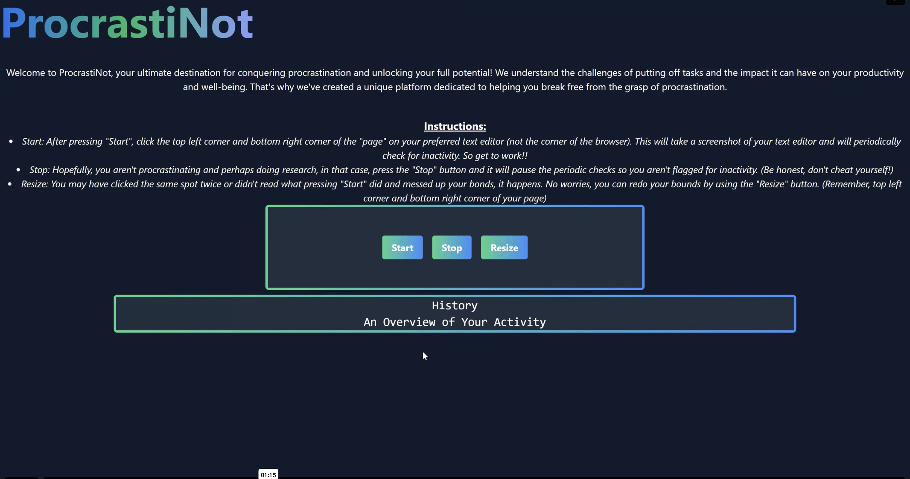
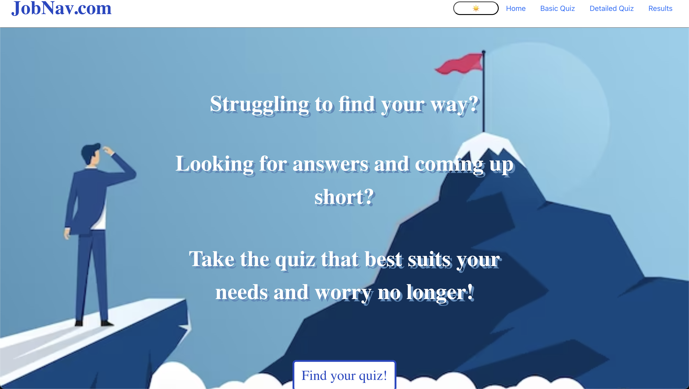
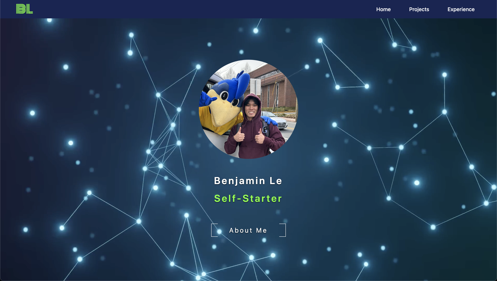

My Projects
Scroll Down To See!
ProcrastiNot

Development Tools:
Python, Tailwind, Flask
A 2024 Hackathon project that aimed to minimize procrastination. It analyzes your writing to determine productivity levels to show them to you, while warning you if you procrastinate too much!
Immersive Learning: Teaching American Sign Language in Virtual Reality

Development Tools: Unity, C#, OpenAI API, Quest 1
This project aimed to spread awareness of the hard of hearing community - a practicing tool to support learning and retention of the ASL alphabet through immersive and engaging environments. Placed in a virtual environment, users could sign messages to an avatar that would use ChatGPT and TTS to respond in engaging conversations with users. The intent to mimic natural dialogue with real people and add to the immersion. Additionally, there is another option that doesn't utilize AI and a virtual avatar and instead has preset phrases for users that gives instant feedback character by character.
FeastFinder

Development Tools:
Typescript, Gemini API, Gemini Vision API, Google Places API, Firestore, NextJS, Tailwind
A 2025 Hackathon project that aimed to solve user indecisiveness and a lack of culinary creativity so that users spend less time figuring out what to eat or make and also have a healthy and positive relationship with food. Users can choose to eat in or eat out. If eating in, users can scan ingredients on hand and generate recipes based on the ingredients they choose to use. If eating out, users can search places to eat based on food type and preference. Resulting places are displayed on a map with ratings, reviews, and their websites if available.
JobNav.com

Development Tools:
Typescript, React, OpenAI API, Agile Methodology
A career finder website built with group mates in CISC 275: Intro to Software Engineering that aids in helping users find their career preferences based on results from the basic quiz or detailed quiz. The results are generated using the OpenAI API and users are given three top careers that they might like.
My Portfolio

Development Tools:
HTML, CSS, Tailwind, Javascript, Github Pages
The site you're on right now!